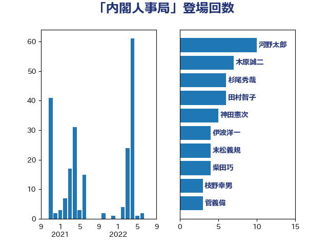

単語「内閣人事局」

| 河野太郎 | 自由民主党 | 10 回 |
| 木原誠二 | 自由民主党 | 7 回 |
| 杉尾秀哉 | 立憲民主党 | 6 回 |
| 田村智子 | 日本共産党 | 6 回 |
| 神田憲次 | 自由民主党 | 5 回 |
| 伊波洋一 | 無所属 | 4 回 |
| 末松義規 | 立憲民主党 | 4 回 |
| 柴田巧 | 日本維新の会 | 4 回 |
| 枝野幸男 | 立憲民主党 | 3 回 |
| 菅義偉 | 自由民主党 | 3 回 |
| 赤池誠章 | 自由民主党 | 3 回 |
| 音喜多駿 | 日本維新の会 | 3 回 |
| 上野賢一郎 | 自由民主党 | 2 回 |
| 加藤勝信 | 自由民主党 | 2 回 |
| 吉田統彦 | 立憲民主党 | 2 回 |
| 塩川鉄也 | 日本共産党 | 2 回 |
| 奥野総一郎 | 立憲民主党 | 2 回 |
| 小沼巧 | 立憲民主党 | 2 回 |
| 山添拓 | 日本共産党 | 2 回 |
| 岸信夫 | 自由民主党 | 2 回 |
| 岸真紀子 | 立憲民主党 | 2 回 |
| 平木大作 | 公明党 | 2 回 |
| 有村治子 | 自由民主党 | 2 回 |
| 柚木道義 | 立憲民主党 | 2 回 |
| 江田憲司 | 立憲民主党 | 2 回 |
| 緒方林太郎 | 無所属 | 2 回 |
| 萩生田光一 | 自由民主党 | 2 回 |
| 西村康稔 | 自由民主党 | 2 回 |
| 谷田川元 | 立憲民主党 | 2 回 |
| 赤羽一嘉 | 公明党 | 2 回 |
| 越智隆雄 | 自由民主党 | 2 回 |
| 阿部司 | 日本維新の会 | 2 回 |
| おおつき紅葉 | 立憲民主党 | 1 回 |
| 井上信治 | 自由民主党 | 1 回 |
| 佐藤英道 | 公明党 | 1 回 |
| 古川俊治 | 自由民主党 | 1 回 |
| 小林鷹之 | 自由民主党 | 1 回 |
| 小沢雅仁 | 立憲民主党 | 1 回 |
| 山井和則 | 立憲民主党 | 1 回 |
| 岸田文雄 | 自由民主党 | 1 回 |
| 後藤茂之 | 自由民主党 | 1 回 |
| 本村伸子 | 日本共産党 | 1 回 |
| 東徹 | 日本維新の会 | 1 回 |
| 柳ヶ瀬裕文 | 日本維新の会 | 1 回 |
| 根本匠 | 自由民主党 | 1 回 |
| 浅野哲 | 国民民主党 | 1 回 |
| 清水貴之 | 日本維新の会 | 1 回 |
| 牧山ひろえ | 立憲民主党 | 1 回 |
| 篠原孝 | 立憲民主党 | 1 回 |
| 舟山康江 | 国民民主党 | 1 回 |
| 薗浦健太郎 | 自由民主党 | 1 回 |
| 足立康史 | 日本維新の会 | 1 回 |
| 金子恭之 | 自由民主党 | 1 回 |
| 鈴木馨祐 | 自由民主党 | 1 回 |
| 階猛 | 立憲民主党 | 1 回 |
| 馬場成志 | 自由民主党 | 1 回 |